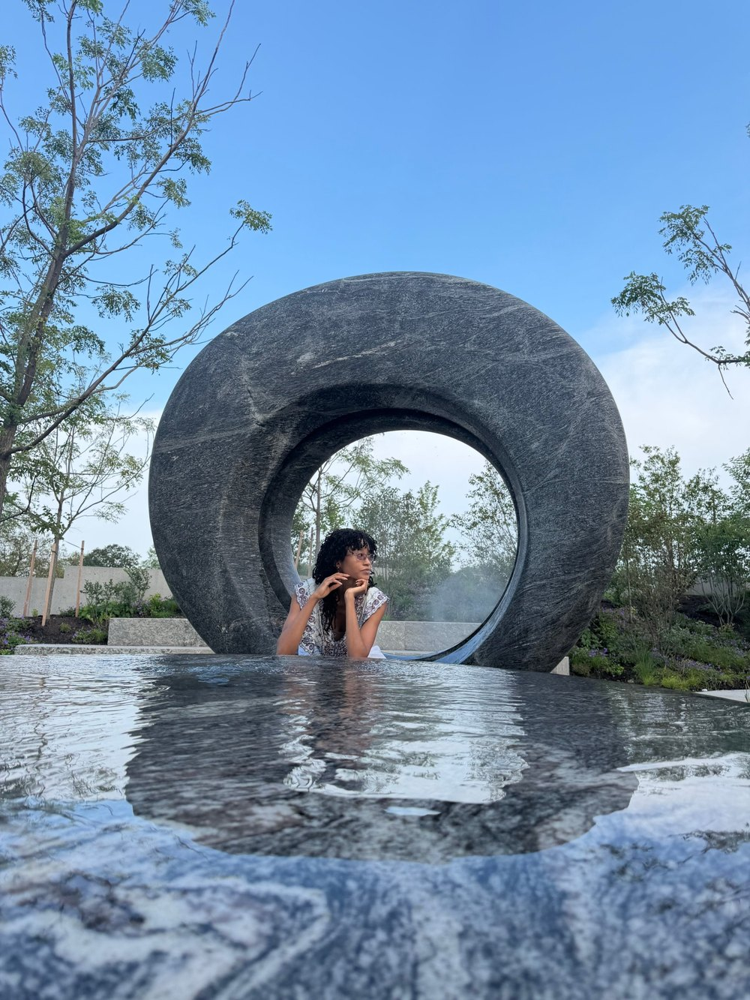

Introduction
Welcome to the first Volume of the digital galleri. We are looking at a collaboration of mathematical values and artistic expression to explore everyday experiences. From portraits of people to places and things of sentimental value. These numbers can express anything from the technical to the creative. This volume is for those who dream to express their creative passions with code. This collection features the P5.JS editor. To see more coded art and its source code, there is a link to OpenSea for more collections of works and GitHub.
Portraits of Organic Machines
Of Environments
Of Sanctuaries
Create Your Portrait
- Select the features
- Color Away
- Save your portrait
Undo covers paint strokes and feature changes. Shortcut: Ctrl/⌘+Z, and Shift+Ctrl/⌘+Z to redo.
Meet the Artist

As an artist, I create art that can be worn, and displayed. As a programmer, I enjoy creating websites, creative programs, and working with numbers. As a creative programmer, I enjoy creating bold masterpieces that incorporate sacred geometry and soul. I started my journey with creative coding when I studied web browser languages (HTML, CSS, JavaScript) and was introduced to the P5.js library, which is a site that allows users to create unique artwork with code. Using this library has not only been an extension of my creative expression, but it has sharpened my skills in computational mathematics.
See more
Check out github to view open source code
Check out OpenSea to view more coded art